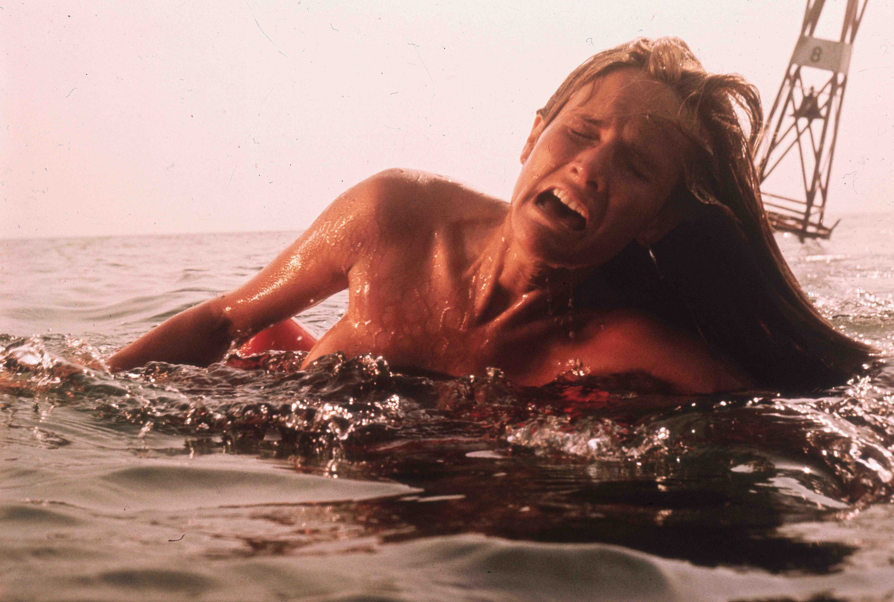
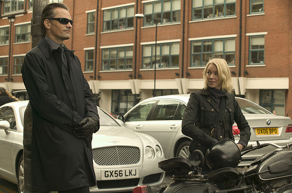

Welcome to Film A Day. Flippant film criticism. Daily.
Join the Conversation
#FilmADay #FilmInAFrame

April 01
April 02
April 03
April 04
April 05
April 06
April 07
April 08
April 09
April 10
April 11
April 12

April 13
April 14
April 15
April 16
April 17
April 18
April 19
April 20
April 21
April 22
April 23
April 24
April 25
April 26
April 27
April 28
April 29
April 23